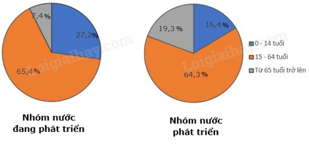
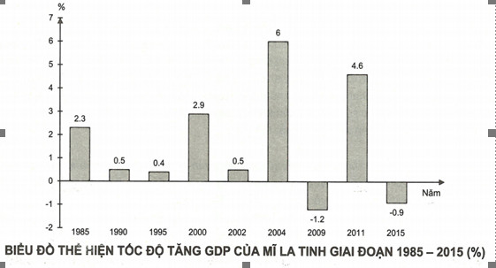
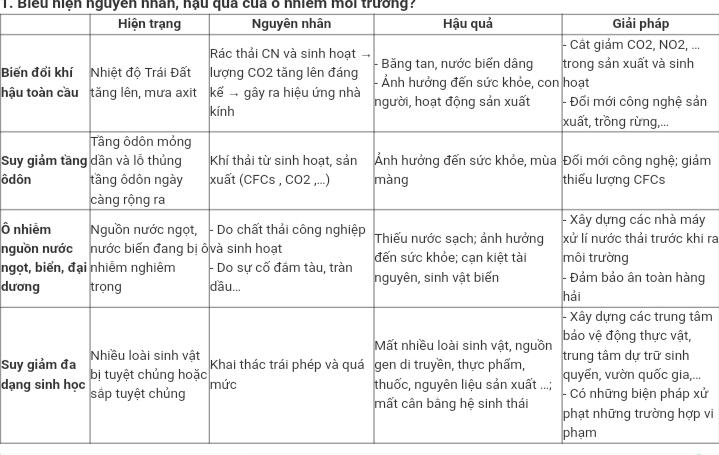

C.BÀI TẬP ( Chỉ cho dạng bài )
Bài tập 1: Cho bảng số liệu:
Cơ cấu dân số theo nhóm tuổi của nhóm nước phát triển và đang phát triển năm 2020
Đơn vị: %
|
Nhóm nước Nhóm tuổi |
Nhóm các nước phát triển |
Nhóm các nước đang phát triển |
|
0 -14 tuổi |
16,4 |
27,2 |
|
15 – 64 tuổi |
64,3 |
65,4 |
|
Trên 65 tuổi |
19,3 |
7,4 |
Vẽ biểu đồ thích hợp thể hiện cơ cấu dân số theo nhóm tuổi của nhóm nước phát triển và đang phát triển năm
2020 nhận xét
* Vẽ biểu đồ

Biểu đồ cơ cấu dân số theo nhóm tuổi của nhóm nước phát triển và đang phát triển, năm 2020 (%)
* Nhận xét và giải thích
=> Nhận xét:
Cơ cấu dân số theo nhóm tuổi của nhóm nước phát triển và đang phát triển năm 2020 có sự khác nhau:
- Tỉ trọng nhóm tuổi từ 15 – 64 tuổi ở cả 2 nhóm nước tương đối gần như nhau: ở nhóm nước phát triển là 64,3% và nhóm nước đang phát triển là 65,4%, chỉ chênh nhau 1,1%.
- Tỉ trọng nhóm tuổi từ 0 – 14 tuổi ở nhóm nước đang phát triển cao hơn nhóm nước phát triển, cao hơn 10,8%.
- Tỉ trọng nhóm tuổi trên 65 tuổi ở nhóm nước đang phát triển thấp hơn nhóm nước đang phát triển, thấp hơn 11,9%.
=> Giải thích:
- Tỉ trọng nhóm tuổi từ 0 – 14 tuổi ở nhóm nước đang phát triển cao hơn nhóm nước phát triển do nhóm nước đang phát triển có tỉ suất sinh cao.
- Tỉ trọng nhóm tuổi trên 65 tuổi ở nhóm nước đang phát triển thấp hơn nhóm nước đang phát triển do nhóm nước phát triển có nền kinh tế phát triển, chế độ chăm sóc người cao tuổi tốt, tuổi thọ trung bình cao.
Bài tập 2: Cho bảng số liệu sau:
Tốc độ tăng GDP của Mĩ La tinh giai đoạn 1985 – 2017
Đơn vị: %
|
Năm |
1985 |
1990 |
2000 |
2005 |
2010 |
2015 |
2017 |
|
Tốc độ tăng GDP |
2,3 |
0,5 |
2,9 |
4,3 |
5,8 |
-0,3 |
0,7 |
Vẽ biểu đồ thích hợp thể hiện tốc độ tăng GDP của Mĩ La tinh giai đoạn 1985 – 2017? Nhận xét?
*Ví dụ làm bài làm dựa theo bài dưới đây (đây không phải đáp án):
* Vẽ biểu đồ:

* Nhận xét:
- Giai đoạn 1985 - 2015, GDP của Mĩ La tinh tăng lên rất nhanh, nhưng còn biến động, cụ thể trong từng giai đoạn như sau:
+ Từ năm 1985 đến năm 2000 tốc độ tăng trưởng GDP của Mĩ La tinh tăng 0,6% (từ 2,3% lên 2,9%).
+ Từ năm 2000 đến năm 2002 tốc độ tăng trưởng GDP của Mĩ La tinh giảm 2,4% (từ 2,9% xuống 0,5%).
+ Từ năm 2002 đến năm 2004 tốc độ tăng trưởng GDP của Mĩ La tinh tăng rất nhanh 5,5% (từ 0,5% lên 6,0%).
+ Từ năm 2004 đến năm 2009 tốc độ tăng trưởng GDP của Mĩ La tinh giảm xuống rất nhanh 7,2% (từ 6,0% xuống -1,2%).
+ Từ năm 2009 đến năm 2011 tốc độ tăng trưởng GDP của Mĩ La tinh có xu hướng tăng nhanh 5,8% (từ -1,2% lên 4,6%).
+ Từ năm 2011 đến năm 2015 tốc độ tăng trưởng GDP của Mĩ La tinh giảm nhanh 5,5% (từ 4,6% xuống -0,9%).
→ Tốc độ tăng trưởng GDP của Mĩ La tinh không ổn định.
-> Ôn các tự luận từ bài 1 đến bài 5 tiết 2. Có 1 số dạng liên quan đến Việt Nam nói riêng, thế giới nói chung.
Câu 3. Nêu các biểu hiện của toàn cầu hóa? Theo em toàn cầu hóa mang đến cho Việt Nam những cơ hội gì?
* Nêu các biểu hiện của toàn cầu hóa
· Gia tăng thương mại quốc tế với tốc độ cao hơn tốc độ tăng trưởng kinh tế thế giới
· Gia tăng luồng tư bản quốc tế bao gồm cả đầu tư trực tiếp từ nước ngoài
· Gia tăng luồng dữ liệu xuyên biên giới thông qua việc sử dụng các công nghệ như Internet, các vệ tinh liên lạc và điện thoại
· Gia tăng trao đổi văn hoá quốc tế, chẳng hạn như việc xuất khẩu các văn hoá phẩm như phim ảnh hay sách báo.
· Toàn cầu hoá cũng tác động đến ý thức con người, khiến con người chú ý hơn đến những vấn đề có ảnh hưởng toàn cầu như vấn đề nóng lên của khí hậu, khủng bố, buôn lậu ma tuý và vấn đề nâng cao mức sống ở các nước nghèo.
· Sự tràn lan của chủ nghĩa đa văn hoá và việc cá nhân ngày càng có xu hướng hướng đến đa dạng văn hoá, mặt khác, làm mất đi tính đa dạng văn hoá thông qua sự đồng hoá, lai tạp hoá, Tây hoá, Mỹ hoá của văn hoá.
· Làm mờ đi ý niệm chủ quyền quốc gia và biên giới quốc gia thông qua các hiệp ước quốc tế dẫn đến việc thành lập các tổ chức như WTO và OPEC
· Gia tăng việc đi lại và du lịch quốc tế
· Gia tăng di cư, bao gồm cả nhập cư trái phép
· Phát triển hạ tầng viễn thông toàn cầu
· Phát triển các hệ thống tài chính quốc tế
· Gia tăng thị phần thế giới của các tập đoàn đa quốc gia
· Gia tăng vai trò của các tổ chức quốc tế như WTO, WIPO, IMF chuyên xử lý các giao dịch quốc tế
· Gia tăng số lượng các tiêu chuẩn áp dụng toàn cầu; v.d. luật bản quyền
* toàn cầu hóa mang đến cho Việt Nam những cơ hội
Tự do hóa thương mại mở rộng, hàng rào thuế quan giữa các nước bị bãi bỏ hoặc giảm xuống, hàng hóa có điều kiện lưu thông rộng rãi.
+ Đón đầu được công nghiệp hiện đại, áp dụng ngay vào quá trình phát triển kinh tế – xã hội
+ Chuyển giao những thành tựu mới về khoa học và công nghệ, về tổ chức và quản lí, về sản xuất và kinh doanh tới tất cả các nước.
+ Các nước thực hiện chủ trương đa phương hóa quan hệ quốc tế, chủ động khai thác các thành tựu khoa học và công nghệ tiên tiến của các nước khác.
Câu 4. Trình bày những thuận lợi và khó khăn về tự nhiên đối với việc phát triển kinh tế - xã hội của Châu Phi? Châu Phi cần có những giải pháp gì để khắc phục những khó khăn về mặt tự nhiên?
* Những thuận lợi và khó khăn về tự nhiên đối với việc phát triển kinh tế - xã hội của Châu Phi
- Thuận lợi: Khoáng sản giàu có và đa dạng kim loại đen, kim loại màu, nhiên liệu » phát triển CN
- Khó khăn:
+ Khí hậu khô nóng: thiếu nước cho sinh hoạt và sản xuất
+ Diện tích hoang mạc, bán hoang mạc và xa van lớn: khó khăn cho phát triển NN
+ Tài nguyên rừng bị khai thác quá mức, làm hoang mạc hóa đất đai
+ Tài nguyên khoáng sản bị khai thác mạnh, có nguy cơ cạn kiệt, ô nhiễm môi trường
* Những giải pháp cần có để khắc phục những khó khăn về mặt tự nhiên ở châu Phi là:
- Khai thác, sử dụng tài nguyên thiên nhiên hợp lí
- Tăng cường các biện pháp thủy lợi để hạn chế sự khô hạn
